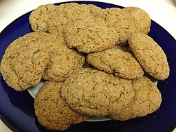

Biscuits
Biscuits are a classic British treat that are perfect for afternoon tea or as a snack.
Ingredients
- 300g plain flour
- 150g sugar
- 1 tsp baking powder
- 150g vegan butter, cold and cubed
- 1 tsp vanilla extract
- 1/2 p cinnamon (optional)
- 1/2 p nutmeg (optional)
- 1/2 tsp salt
- 1-2 tbsp plant milk (if needed)
- Dark chocolate, melted for drizzling (optional)

Method
- Preheat the oven to 180°C.
- Cream the sugar and vegan butter until light and fluffy.
- Gradually add the flour and mix until a soft dough forms.
- Roll out the dough on a floured surface to about 1cm thickness.
- Cut out biscuits using a round cutter and place on a baking tray lined with parchment paper.
- Bake for 12-15 minutes until golden brown.
- Allow to cool completely before serving.